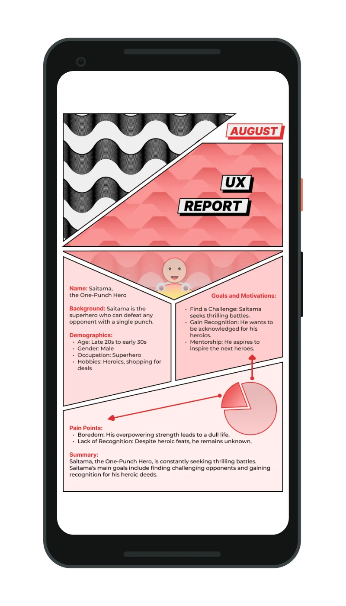
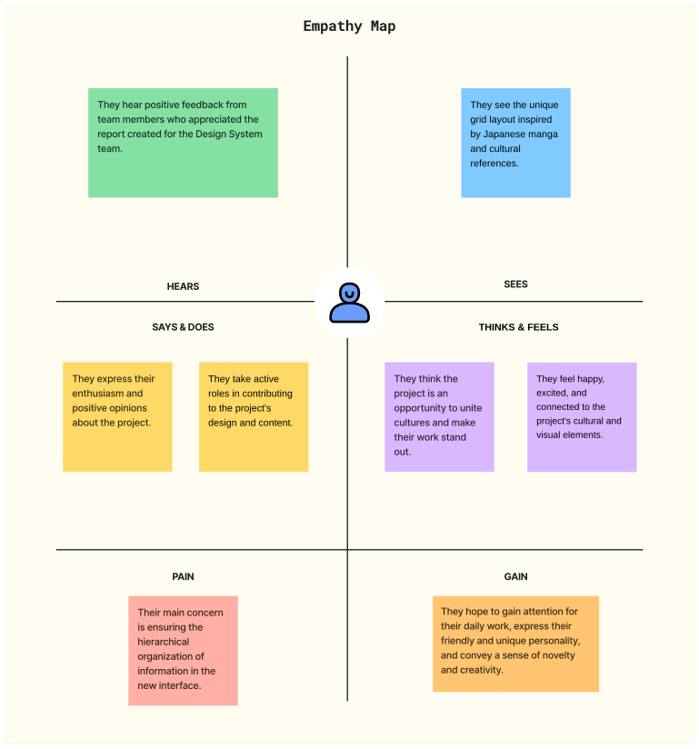
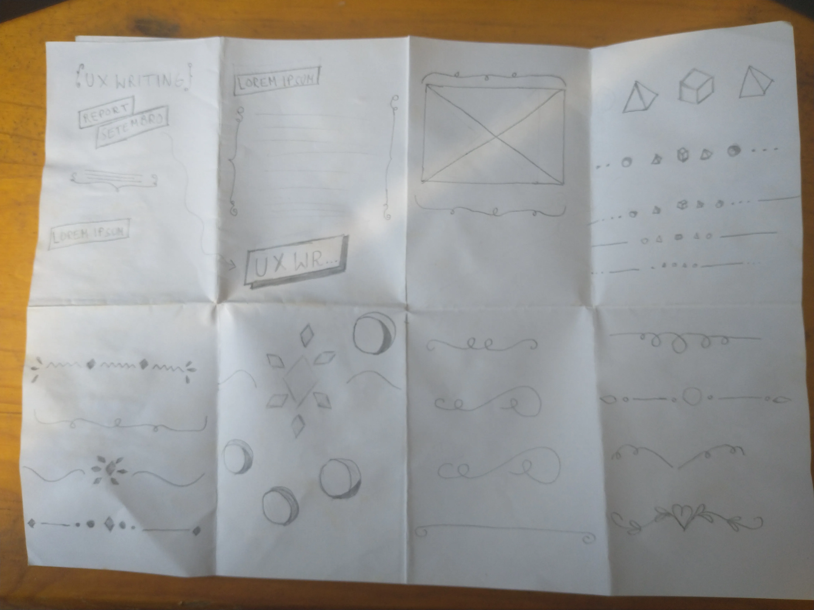
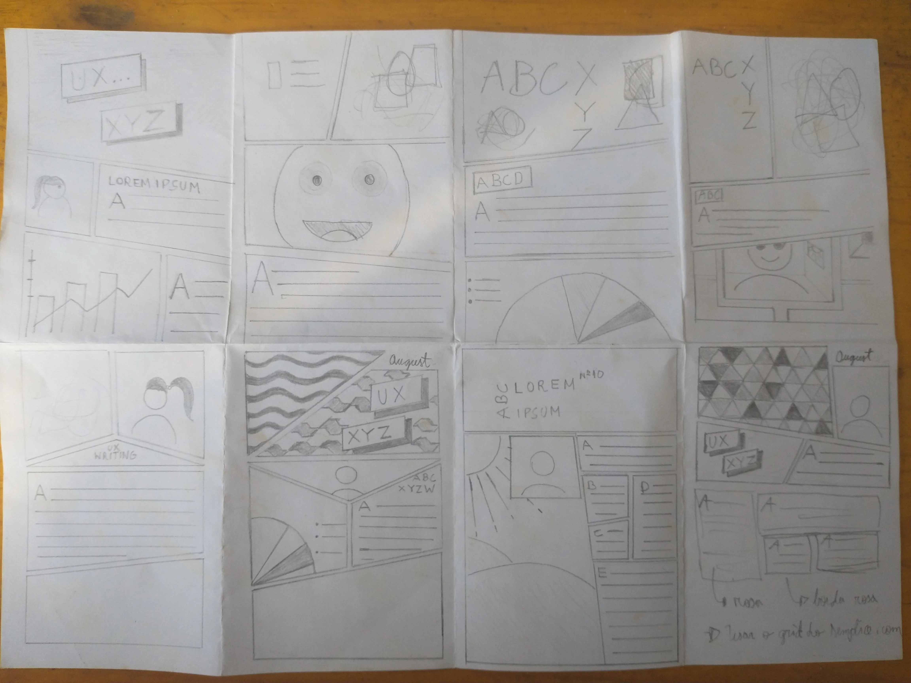
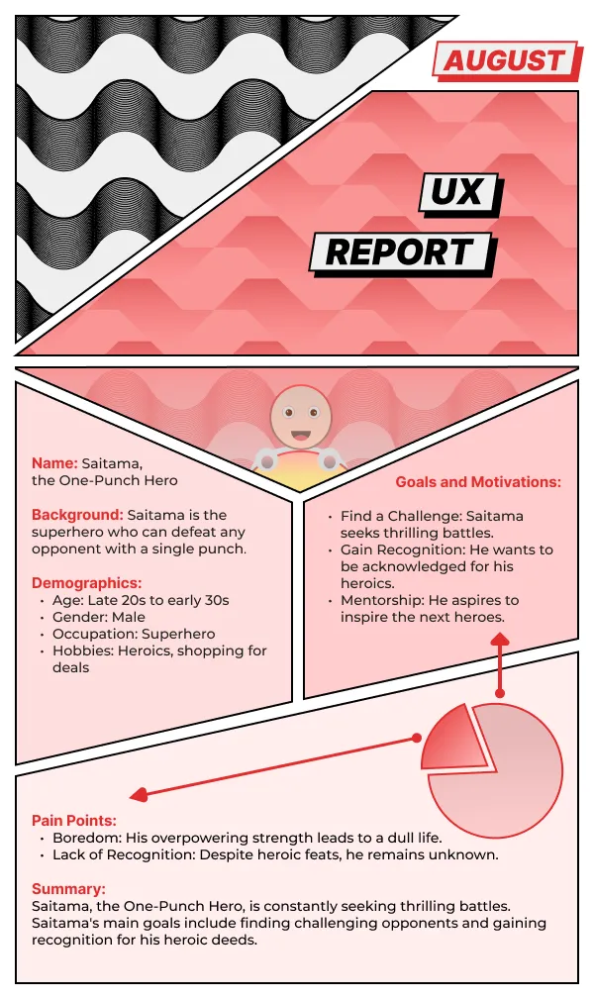

UX Design
Report
User Interface

Introduction
UX Design Report is an editorial case study that merges Japanese pop culture, Brazilian heritage, and UX Writing. Designed as a 1-month visual showcase, the project rejects rigid corporate slides in favor of a dynamic, manga-inspired grid layout to make internal team updates highly engaging.
As the UI Designer & UX Researcher, I led layout brainstorming sessions (Crazy-8s), structured the information hierarchy, and implemented the high-contrast responsive interface to showcase the squad's disruptive content updates.
- Cultural Motivations: Why merge Japanese pop culture and Brazilian motifs with UX Writing updates?
- Grid System Rationale: How does a manga-inspired layout improve reader engagement?
- Team Alignment: How did team members react to these unconventional styling choices?
- Hierarchy Obstacles: What challenges did we face when organizing dynamic visual hierarchies?
- Visual Appeal: Cultivating enthusiasm and focus using regional and comic aesthetics.
- Impact & Engagement: Elevating the professional presence of the UX Writing squad's updates.

"We need a visual, innovative report format to engage our internal readers, breaking away from standard corporate slides without losing focus on highlighting user pain points." — Helena & Anna Julia (UX Writing Leads)
Visual Direction: Structure, Typography & Colors
Core Concept: We abandoned standard corporate templates in favor of a dynamic, storybook-style canvas that mirrors the editorial nature of UX writing. The colors and visual structure were specifically customized to match the energetic tone of the project leads.
Brainstorming & Crazy-8s: During our kickoff session, we explored dynamic comic book layouts to break the grid. Using the rapid 'Crazy-8s' ideation method, we translated the diagonal framing styles of One-Punch Man into two distinct visual concepts.

Crazy-8 containing multiple text ornaments that could remind the idea of writing

Bottom: second from left to right, last from left to right were the two sketches chosen to be developed later.
Layout Architecture & Visual Breakdown
The interface fuses Brazilian cultural motifs with Japanese pop culture layout dynamics to create a rich visual identity for the UX writing documentation. The layout acts as a visual analysis, utilizing the character structure of One-Punch Man's Saitama as a persona to model our internal user groups.

Visual Identity & Cultural Metaphors:
• Rio's Copacabana Sidewalk: Black-and-white wave pattern framing the top header.
• São Paulo Flag Motif: Triangles recolored in pink, representing the two-woman UX writing team.
• Comic-Strip Header: Designed with a month label for recurring monthly updates.
User Persona & Pain Points (Saitama Archetype):
• Inverted Triangle Panel: Highlights the persona avatar at the center.
• One-Punch Man Metaphor: Models demographics, occupation, and goals in the middle panels.
• Pain Points Chart: A custom pie chart humorously showing how Saitama's overpowered boredom dwarfs everyday challenges.
Grid System & Eye-Tracking:
• Asymmetric Comic Panels: Diagonal cuts create high visual energy.
• Strict Vertical Columns: Guarantees a natural top-to-bottom scanning flow for optimal readability.
Weights: Bold (700), Semi-Bold (600). Offers supreme legibility and structural clarity in layouts.
Weights: Regular (400), Medium (500). Warm geometric aesthetics.
To mirror the dynamic layout of Japanese comics (manga) while preserving content readability:
- Asymmetric Panels: Swapped rigid grid divisions for diagonal manga-inspired panels, drawing inspiration from One-Punch Man.
- Color Coding: Pastel rose containers (#F0D8D8) highlight high-priority data, creating visual anchors against the dark theme.
- Reading Flow: Despite the diagonal panel borders, text layout conforms to strict vertical alignment axes to guarantee natural user eye-tracking.
Live Preview
Conclusion
In summary, the UX Design Report successfully honors the craft of the UX writing team by merging expressive visual storytelling with solid design principles.
Incorporating Brazilian regional design cues—such as the Rio wave pattern and São Paulo geometric themes—alongside manga-inspired layouts demonstrated that internal documentation doesn't have to be rigid or corporate to be effective.
Breaking away from default grids was an excellent exercise in pushing layout boundaries while preserving accessibility and legibility.
- Accessibility in Asymmetric Layouts: Dynamic panels require careful visual hierarchy structure to ensure screen readers scan content chronologically.
- Co-design and Tangible References: Bringing physical comic book examples to the kickoff session accelerated ideation and built alignment with the team.
- Technical Next Step: Prototype the responsive diagonal cells using modern CSS Grid and clip-path properties to validate responsive behavior.